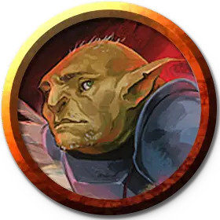

Дермот Вурдер (2-го уровня)
Dermot Wurder (Tier 2)
Маленький Гуманоид (Жрец, Гоблин, Гоблиноид), законно-добрый, именной НИП

Класс Доспеха 19 (наборный доспех, щит)
Хиты 82 (15к6 + 30)
Скорость 30 футов
| мод | спас | ||
|---|---|---|---|
| СИЛ | 18 | +4 | +4 |
| ЛОВ | 12 | +1 | +1 |
| ТЕЛ | 14 | +2 | +2 |
| мод | спас | ||
|---|---|---|---|
| ИНТ | 10 | +0 | +0 |
| МДР | 18 | +4 | +7 |
| ХАР | 10 | +0 | +3 |
Навыки Выживание +7, Медицина +7, Религия +3
Чувства тёмное зрение 60 футов, пассивное Восприятие 14
Языки Общий, Гоблинский, Орочий
Опасность 5 (1800 опыта)
Бонус мастерства +3
Действия
Мультиатака. Дермот совершает одну атаку Боевым молотом и одну атаку Палящим гневом.
Боевой молот. . Рукопашная атака оружием: +7 к попаданию, досягаемость 5 футов, одна цель. Попадание: 8 (1к8 + 4) дробящего урона или 9 (1к10 + 4) дробящего урона, если держит оружие двумя руками.
Палящий гнев. . Дальнобойная атака заклинанием: +7 к попаданию, дистанция 60 футов, одно существо. Попадание: 18 (4к8) урона излучением и цель ослеплена до конца своего следующего хода.
Использование заклинаний. Дермот может наложить одно из следующих заклинаний, используя Мудрость в качестве базовой характеристики (Сл спасброска от заклинания 15):
• Неограниченно: указание [guidance], свет [light], уход за умирающим [spare the dying];
• 2/день каждое: благословение [bless] (вариант 2-го уровня), лечение ран [cure wounds] (вариант 3-го уровня);
• 1/день: возрождение [revivify].
Описание
Когда ты двенадцатый сын бедной семьи гоблинов из Джигау, единственный способ сделать себе имя — это стать великим чемпионом - тем, кто может выигрывать соревнования по хвастовству в местных тавернах ночь за ночью. Однако юный Дермот Вурдер не был заинтересован в том, чтобы демонстрировать силу или ловкость, которые заслужили бы ему комплимент. Слава была не для него, как и агрессивность, которая требовалась, чтобы стать знаменитым. Его больше интересовало приготовление пищи, посадка цветов и шитье одежды — работа, которая поддерживала его семью вместе, в то время как его беззаботные братья и сестры прыгали с водопадов и боролись с бродячими собаками.
Дермот и Айо Джабе знают друг друга достаточно долго, чтобы их первая встреча растворилась в дымке юношеских воспоминаний. Дермот сопровождал Айо всякий раз, когда мог, собирая травы и лекарства, когда они отправлялись на разведку в лес. Когда Айо недавно рассказала ему о своей мечте создать отряд искателей приключений, он начал тренироваться, чтобы носить тяжелые доспехи, и погрузился в изучение веры Люксона, чтобы он мог использовать благословения света для защиты тех, о ком он заботится.
Дермот яростно защищает своих друзей и яростно осуждает любого, кто унижает их или угрожает им. Его глубочайшая потребность — о которой он даже не подозревает — это завести друга, который поможет ему понять, что он сам бы хотел.
Примеры высказываний в Бою
"Я здесь, чтобы убедиться, что никто не умрет. Отступаем!" "Люксон защитит меня." "Айо, Мэгги, мне бы не помешало немного помощи!"
Уровни Соперников
По мере того, как персонажи повышают свой уровень и получают новое снаряжение в ходе этого приключения, соперники набирают силу. Каждый соперник представлен тремя блоками характеристик.
СОПЕРНИКИ 2-го уровня
Соперники 2-го уровня уже знают, что их приключения заводят их в ужасные места, которые проверят их отвагу, но они сталкиваются с этими проблемами с высоко поднятой головой.